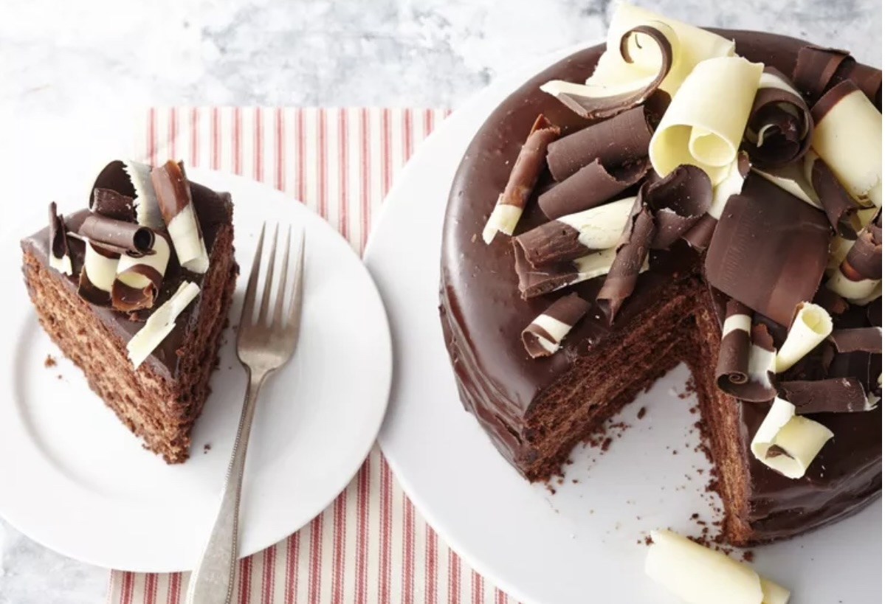

Chocolate Cake Recipes

Description
If you grew up in the South, then you know every Southern cook has their own chocolate cake recipe that they always claim is the best. And we completely agree! Each cake has its own special trick or ingredient that makes it just as unique as the baker who prepared it. So we asked real Southern bakers, from home cooks to restaurant owners, what their favorite hacks are for creating the very best chocolate cakes. Read on to see their top tips.
Ingredients
- butter & eggs.
- Sift dry ingredients & cocoa powder.
- coffee or espresso powder.
- black cocoa powder.
- brown sugar , white sugar called .
- sour cream.
- pudding packet.
- buttermilk
- chocolate bar chunks & chocolate chips
- extracts.
- stout.
- whipped ganache .
- salt.
Steps
- Use room temperature butter & eggs.
- Sift dry ingredients & cocoa powder.
- Add hot or cooled coffee or espresso powder.
- Use black cocoa powder.
- Substitute brown sugar for half of the white sugar called for.
- Add sour cream.
- Put in a pudding packet.
- Substitute buttermilk
- Choose chocolate bar chunks & chocolate chips
- Add extracts.
- Slip in some stout.
- Use whipped ganache as frosting.
- Add an extra dash of salt.